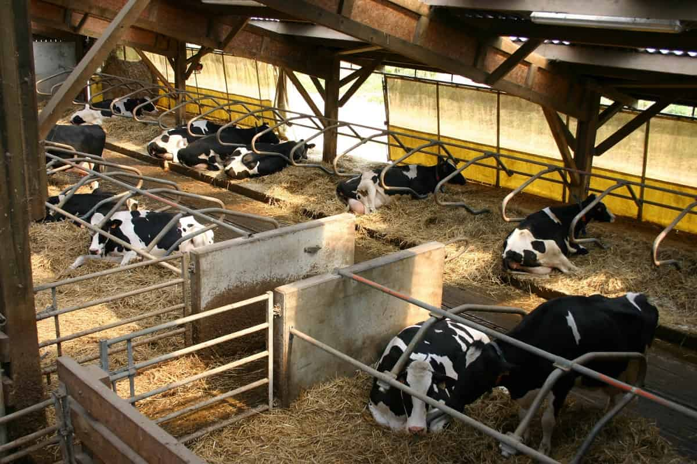
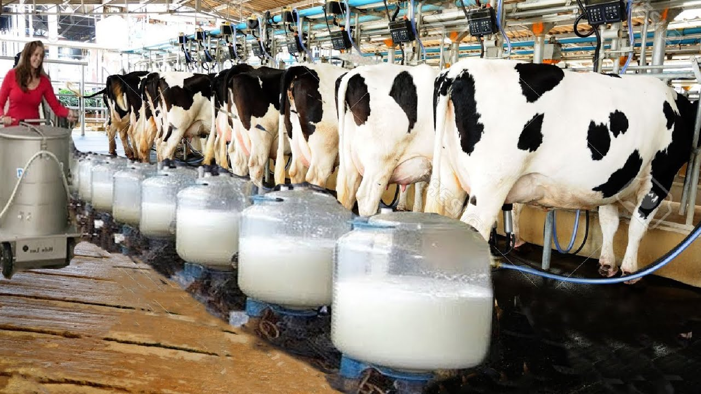

Housing and Facilities
Cattle production is a complex and dynamic industry that require careful management, attention to details, and continuos adaptation to meet the needs of consumers and ensure the sustainability of the agricultural sector. Cattle require adequate housing and facilities to ensure their well-being and productivity. Housing should protect them from extreme weather conditions and provide proper ventilation. Facilities may include feeding areas, watering systems, and handling facilities for tasks like Vaccinations and hoof trimming
Nutrition
Cattle nutrition is crucial for growth, reproduction, and overoll health. They primarily feed on grass, hay, silage, and grains. Farmers often formulate balanced diets to meet their nutritional requirements, which may include protein, carbohydrates, vitamins, and minerals.
Healthcare
Cattle require regular Healthcare to prevent and manage diseases and parasites. This includes Vaccinations, deworming, and proper hygiene practices. Veterinarians play a vital role in monitoring herd health and providing medical treatment when necessary
Environmental Consideration
Sustainable cattle production involves minimizing environmental impact by managing resources efficiently, reducing waste, and implementing practices that conserve soil and water resources.